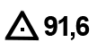
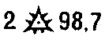
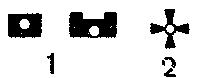
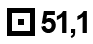
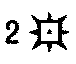
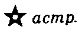
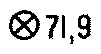

Пункты

Пункты государственной геодезической сети (91,6 – высота основания пункта над уровнем моря)

Пункты государственной геодезической сети, расположенные на курганах. (2 – высота кургана в метрах; 98,7 – высота основания пункта над уровнем моря в метрах)

Пункты государственной геодезической сети, расположенные на зданиях (1) или на церквах (2).

Точки съёмочной сети, закреплённые на местности центрами. (51,1 – высота точки над уровнем моря в метрах)

Точки съёмочной сети, закреплённые на местности, расположенные на курганах. (2 – высота кургана в метрах)

Астрономические пункты

Нивелирные марки и реперы (грунтовые). (71,9 – высота марки/репера над уровнем моря в метрах)